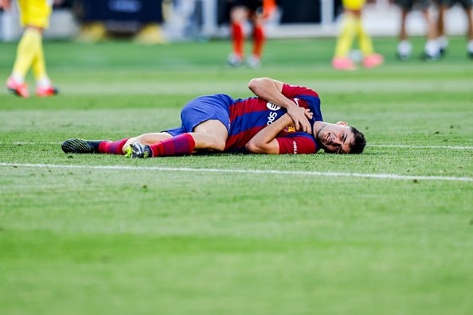

Buenas noticias para Pedri y para Xavi Hernández. Buenas noticias para el Barça, en general. Esta tarde se ha entrenado la plantilla blaugrana en la primera sesión de la semana , justo después del clásico contra el Real Madrid. El tinerfeño se ha ejercitado en su totalidad con el resto del grupo y ha finalizado con buenas sensaciones.
Reina la calma en el 'staff' técnico y Pedri sigue actuando con prudencia en algunas acciones, pero si todo sigue su curso, el domingo debería entrar en la lista de convocados para viajar a Donosti y enfrentarse a la Real Sociedad el sábado (21:00 horas) en la 12ª jornada de LaLiga.
Pedri se lesionó nada más arrancar la temporada oficial con el FC Barcelona. De hecho, tan solo pudo participar en los dos primeros encuentros ligueros: contra el Getafe a domicilio y ante el Cádiz en el Estadi Olímpic Lluís Companys. ¿La razón? Una lesión en el recto anterior del muslo derecho, la misma que sufrió la temporada pasada durante el partido de Europa League ante el Manchester United.
Así pues, una vez recuperados Lewandowski, Raphinha y Kounde; el siguiente en reaparecer será Pedri. El Barça ha acusado las bajas de estos futbolistas -además de la de De Jong, quien también ultima los plazos de su recuperación-, pero ahora recupera a varios miembros de la columna vertebral del equipo para un tramo clave de la temporada.
